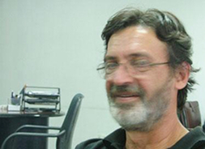

Интервью с руководителем
независимой армянской
телекомпании А1+
Месропом Мовсесяном состоялось во время
Южнокавказского фестиваля мира
и прав человека в Армении,
организованного Кавказским Центром
Миротворческих Инициатив при поддержке Фонда Партнерства Евразия - Армения
В АРМЕНИИ ПРОИСХОДИТ ИМИТАЦИЯ СВОБОДЫ СЛОВА
Ваша телекомпания А1+ была закрыта в 2002 году, однако уже в июне этого года вы выиграли иск против правительства Армении. Как вы можете оценить состояние свободы слова в Армении?
К сожалению, радоваться нечему. На сегодняшний день в Армении происходит иммитация свободы слова. Есть коммерческие телеканалы, коммерческие газеты, радио, но если копнуть поглубже, то начинаешь понимать, что все они контролируемы, находятся в полной финансовой зависимости от олигархов, от бизнеса, который близко стоит к руководству Армении и оно, в свою очередь, очень жестко контролирует пресловутую свободу слова.
Это становится особенно очевидно во время выборов президента, в парламент, даже во время муниципальных выборов. Ясно видно, что в СМИ работают свои каналы, свои люди. И тот, кто находится вне определенного круга, близко стоящего к руководству страны, тот считается оппозицией. А само слово оппозиция в Армении давно стало почти ругательством. Оппозиция воспринимается чуждым слоем, какими-то инопланетянами, которые почему-то появились здесь и которые почему-то недовольны в стране, в которой все должны быть довольными. В этой ситуации инакомыслящие телеканалы не могут существовать в Армении, на примере А1+ всех их посадили на свои места и разложили по нужным полочкам. Власти показали, что могут закрыть телеканал, что никто не понесет за это никакого наказания, народ уже успокоился – вначале протестовали, а теперь уже свыклись с мыслью, что такого канала больше уже нет. Остальные поняли, что нужно тихо и молча делать деньги, чем и занимаются с успехом, а в необходимое время начинают защищать интересы своих попечителей. На этом и заканчивается свобода слова в Армении.
Телекомпания А1+ выиграла иск против правительства Армении в Европейском суде по правам человека. Ваш телеканал должен получить компенсацию от властей и должен начать функционировать... Что изменилось после вердикта Европейского суда?
С 2002 года, сразу после закрытия нашей телекомпании, мы начали вести судебные процессы по нашему вопросу, по свободе слова, по правам человека. Все судебные процессы в Армении, а их было восемь, мы проиграли. Мы подавали на аппеляцию и также проигрывали. Затем у нас не оставалось иного пути, как подать иск в Европейский суд по правам человека и после шести лет мучительного ожидания получили вердикт, который гласил, что наши права должны быть восстановлены, что незамедлительно должен быть проведен тендер на те каналы, срок лицензии которых истек и т.д. Но мы были очень удивлены реакцией наших властей – они попытались убедить общество в том, что решение Европейского суда не означает проигрыша властей. Власти утверждали, что Месроп Мовсесян выдвинул иск на компенсацию в один миллион 350 тысяч долларов, но суд определил сумму компенсации всего в 20 тысяч евро. То есть, сути решения суда они вообще не затронули. Получалось, что я боролся за то, чтобы получить бешеные деньги, а мне всего дали 20 тысяч и, стало быть – я проиграл. Таким образом власти утверждали, что в проигрыше остался я, а не они. Конечно же - это абсурд.
Теперь власти хотят быстренько поменять закон о телевидении и радио, протолкнуть его через парламент, отменить все конкурсы, из-за того, что якобы переходят на цифровое вещание. Но ведь и ежу ясно, что не это является причиной продавливания поправок в закон. Переход на цифровое вещание может длиться десятилетиями, так как необходимо провести масштабное техническое переоснащение. Сейчас идет процесс продавливания этого закона с тем, чтобы отменить все конкурсы на получение лицензий. Получается, что полученные ранее лицензии закрепляются за теми ТВ-каналами, теми группировками, которые обладают ими на данном этапе. Это тоже определяет уровень свободы слова в Армении, который, по-моему, находится «ниже плинтуса». Пока непонятно, парламент примет поправки в закон или нет. Но мне кажется, что закон все же будет принят именно в той форме, которая устраивает власти. Что касается прав человека, то и они попираются. Согласно Конституции Армении, я имею право иметь свой бизнес, имею право на выражение своих мыслей, и государство обязано обеспечить мою свободу и защитить мои права.
Почему именно мне не разрешается работать... Я сделал много попыток и использовал самые разные каналы, чтобы начать работать, но мне не удалось этого добиться. Наш телеканал все считали действительно независимым, а не оппозиционным, так как мы давали достоверную информацию как о властях, так и об оппозиции. Но наш бывший президент Роберт Кочарян оказался настолько глупым, что ему показалось, что если в этой стране будет существовать оппозиция и об этом будет знать народ, то страна погибнет... Он представлял себе существование свободы слова именно так. По его разумению, единственным политиком, единственным руководителем являлся только он и кроме него никто не смел посягать на его статус и место. Конфликт с Кочаряном у нас начался в день расстрела парламента в 1999 году, когда мы вели прямую постоянную трансляцию из парламента, там работали наши операторы и два корреспондента. Президент приказал отменить трансляцию, я не подчинился и продолжил работать. Это стало началом нашего с ним конфликта, который достиг своего апофеоза в 2002 году. До сих пор считается, что если сегодня я начну вещание, то обязательно начну делать революцию, правда непонятно почему...
В Армении в этом году сменился президент, к власти пришел новый человек...
Нет, произошла всего лишь смена декораций на сцене. Роли остались теми же, исполнители те же... На той же сцене играют тот же сценарий те же самые люди. Абсолютно ничего не изменилось. Разговоры о борьбе с коррупцией – та же иммитация. Буквально пару дней назад от меня требовали взятку и довольно-таки большую для того, чтобы сделать абсолютно законное дело, притом люди из близкого окружения президента.
Ваш телеканал получил компенсацию от правительства?
Не получил и, думаю, что еще долго не получит ее. Власти прикидываются идиотами - вначале заявили, что у них есть время до января. В то время как в вердикте суда определенно указан срок в три месяца. Затем власти заявили о том, что они неправильно поняли документ, так как решили, что у них есть время в три месяца для того, чтобы опротестовать решение суда, которое не подлежит обжалованию. Идет какая-то глупая и непонятная игра с их стороны.
Получается, что и вы становитесь игроком в этой игре. Что вы намерены делать дальше?
Во-первых, мы будем продолжать бороться до победного конца. Во-вторых, после закрытия телекомпании мы поменяли профиль и продолжали работать все шесть лет. Но основной нашей деятельностью является телевидение и потому мы боремся, чтобы вернуть наш основной профиль, боремся за наши права.
Телекомпанию А1+ закрыли. Но ведь есть прецедент телекомпании «ГАЛА» из Гюмри, которую власти не смогли закрыть. Чем это можно объяснить?
После того, как поднялся шум по поводу закрытия «ГАЛА», власти испугались, что сильным ударом по их имиджу будет второй иск в Европейском суде по правам человека. Наше дело как раз тогда находилось в стадии рассмотрения в Европейском суде. Они знали, что руководство «ГАЛА» намерено идти до конца и дойдет до Европейского суда, что их не устраивало.
Как вы можете оценить освещение армянскими СМИ августовских событий в Грузии с профессиональной точки зрения?
Первое, что меня возмутило – молчание в армянских СМИ. То есть, постоянные ссылки на российские СМИ, на Москву, постоянные подключения российских каналов... Это говорило о том, что наши СМИ еще не понимали, что вообще творится, что происходит в соседней стране. СМИ ждали реакции нашего президента, который в то время находился на Олимпиаде в Китае. Президент задержался в Китае, и, я думаю, намеренно. Как мне кажется, он просто не знал, что ему говорить и как реагировать. С одной стороны, Грузия – наш сосед, с которым надо продолжать жить дальше; с другой стороны – это уже международный скандал; с третьей стороны – «московский папа» ждет, надо же ответить ему... Наш президент намеренно затягивал ответ, ссылаясь на какие-то непонятные организационные вопросы, выжидал чего-то. По тому же пути пошла и пресса, которая как-то приглушенно выдавала информацию – непонятно было, что происходит в соседней стране, то ли война, то ли агрессия со стороны Грузии, то ли агрессия со стороны России... Слава Богу, мы могли получать информацию и из других источников. Но до сегодняшнего дня наши СМИ очень плохо анализируют создавшуюся в Грузии ситуацию, они боятся что-то сказать, чего я не понимаю, ведь Москва уже определилась сама по себе, заявила об этом на весь мир. А в Армении получается, так, что мы за Россию, но давайте просто промолчим...
Как вы считаете, позиция Москвы, стратегическое партнерство России и Армении каким-то образом определяет уровень свободы слова в Армении?
Я считаю, что Армения всегда использовалась Москвой в качестве испытательного полигона для различных государственных проектов. Это неоднократно доказывалось и президентскими выборами с рокировкой постов, что не получилось у нас из-за фигуры Тер-Петросяна, но получилось у них. Москва апробировала свои проекты в Армении, чтобы затем, учитывая ошибки, реализовывать все то же самое в России. То есть в Армении проводилась испытывались на прочность и ошибки проекты, в том числе и по свободе слова, которые затем внедрялись в России. Сразу после закрытия нашей телекомпании, в России взялись за телеканал НТВ. Но на этот раз в Москве знали, что закрывать телевидение не следует, так как уже был пример А1+, они знали, что поднимется шум, пойдет волна с Запада и т.д. Москва учла ошибки наших властей в отношении А1+ в своих действиях против НТВ и других телеканалов. Да, там отбирали лицензии у владельцев, но компенсировали это деньгами. Телекомпании в России давили, затем перекупали, но никогда не закрывали, как это было сделано в Армении. Да и по другим вопросам в Армении Москва пробует на жизнеспособность различные модели государственного управления, политтехнологии.
А не опасно для самой Армении быть испытательным полигоном?
Ну ведь не секрет, что Армения маленькая и бедная страна, терять ей больше нечего, а становится полигоном всегда прибыльно для властей.
Лидер армянской оппозиции Левон Тер-Петросян поддержал действия России во время августовской агрессии в Грузии, в то время как президент Серж Саркисян предпочел отмолчаться. Получается, что оппозиционер Тер-Петросян оказался в итоге более пророссийски настроенным политиком, нежели президент страны-партнера России...
Тер-Петросян сам себе ищет сейчас стратегических партнеров извне. То есть, Россия может стать тем партнером, который поддержит его движение. Кроме того, перед ним четко встанет проблема Нагорного Карабаха в том случае, если он придет к власти. Россия сейчас показала, что такие проблемы очень легко решить извне. Например, Карабах может попросить Россию признать его независимость от Азербайджана, с которым хочет дружить Россия. Вполне возможно, что реакция Тер-Петросяна – это попытка заглянуть вперед и он вынужден говорить что-то подобное. Впереди его ждет очень долгая борьба.
Как вы можете оценить уровень свободы слова в Грузии, Армении и Азербайджане?
Однозначно могу сказать, что в Азербайджане со свободой слова есть очень серьезные проблемы, там хуже ситуация, чем даже в Армении. Мы часто встречаемся с азербайджанскими коллегами, делимся, я удивляюсь, как они там вообще выдерживают такой натиск. Алиевская команда очень жестко контролирует и давит на весь спектр СМИ. В Грузии во время Шеварднадзе со свободой слова было немногим менее жестко, чем сейчас у нас в Армении. Меня удивило, что после революции роз в Грузии не исчезла проблема свободы слова, а даже в чем-то усугубилась. Это видно на примерах телекомпании «Рустави 2», «Имеди». Это особенно удивляет, так как президент Саакашвили не раз декларировал свою приверженность свободе слова, защите прав человека. И тем не менее, проблемы остались. Во всем регионе Южного Кавказа существуют проблемы со свободой слова и это надо решать. Руководство наших стран должно осознать, что без свободы слова оно само не сможет нормально функционировать. Я удивляюсь, как они сами этого не понимают, неужели им самим нравится все время слышать хвалу и лесть?! Когда закрываешь глаза на ошибки, появляется трещина, которую не замазать ничем, она расползается все глубже и глубже. Неужели они не понимают, что с прессой нужно дружить, СМИ – это посредник между властями и народом. И чем крепче будут СМИ, тем лучше будут отношения между народом и властями.
Как вы считаете, что ожидает свободу слова в нашем регионе, если на протяжении стольких лет мы не смогли ее достичь, то это говорит об откате назад, ведь без свободы слова нет смысла говорить и о развитии демократии в странах Южного Кавказа?
Конечно, демократия – это красивая сказка для нас, абсолютной демократии не существует. Но если есть стремление к ней, надо строить хоть какое-то ее подобие. Мне кажется, что в будущем, а это вопрос времени, мы все начнем с нуля, так как пока ничего у нас не получилось. Пусть никто не говорит, что кто-то что-то уже построил. Старая машина испортилась, а как построить новую – никто из нас не знает. Наверное, мы все очень скоро поймем, что необходимо не реставрировать старую машину, а строить новую, которая будет способна ехать вперед.
Решение Европейского суда по вашей телекомпании явилось первым прецедентом в регионе. Что вы думаете, почему было принято такое решение, неужели не было ущемления свободы слова в других странах?
Это прецедент не только в нашем регионе, но и в СНГ в целом. До нашего случая было подобное решение Европейского суда по телекомпании из Сербии, потом были мы. Наш прецедент внесен в энциклопедию по свободе слова Европейского суда, где будет описан весь процесс, решение суда и его выполнение. Правда, насчет выполнения пока я затрудняюсь сказать, как и что будет написано. Если я не ошибаюсь, после вынесения решения суда Мэтью Брайза заметил, что это будет всем тем, кто посягается на свободу слова, уроком на будущее. Но... решение суда есть, а наши власти пока и не думают его выполнять.
Какой будет реакция международного сообщества на выполнение или невыполнение властями Армении решения суда по телекомпании А1+?
Реакция уже была, из офиса Европейского суда уже интересовались, какие шаги были предприняты властями. Я ответил, что никаких шагов пока не было. У меня запланированы встречи с представителями американского посольства, они спрашивали, встречался ли кто-нибудь от властей со мной, что-то предлагали, шла ли речь о каких-то компромиссах. Я ответил, что нет. Те очень удивились, мол, как же так, ведь было решение суда, и предложили встретиться...
Есть ли в Армении внутренний ресурс для того, чтобы отстаивать свободу слова и в будущем?
Потенциал есть, но нужна искра, чтобы взорвать и изменить ситуацию. Все изменилось после 1 марта, многое стерлось и поломалось. Сейчас закрутить заново очень сложно и нужно больше времени. Накал страстей не упал, но мы все-таки живем на Кавказе, где часто темперамент определяет твои действия больше, чем что-либо другое. Уже смещены акценты. Ни А1+, ни Левон Тер-Петросян, а личное достоинство выходит на первый план. В какой-то период достоинство митингующего было задето закрытием, например, А1+, но сейчас многие рассуждают примерно так – в меня стреляли, меня избивали дубинками, я должен оторвать ему голову... И большинство считает, что это его личное дело. В такой ситуации сложно будет делать акцент на А1+, на свободу слова. Это тоже будет иметь значение, но уже в меньшей степени.
В августе работали или нет ваши корреспонденты в Грузии?
К сожалению, нет, так как именно в эти дни меня не было в стране, большинство из наших сотрудников находились в отпуске. Всех оперативно собрать в столь короткое время было просто невозможно. Но мы получали информацию из Грузии, постоянно отслеживали ее. Сейчас в Грузии работают два наших корреспондента.
В Армении мне часто приходилось слышать, что проблема конфликтов в Абхазии и Южной Осетии закончена, решена, причем решена именно войной...
Я уверен в том, что то, что случилось в Южной Осетии, явилось результатом большой провокации. Я не могу сказать, что я выступаю против России, но я не воспринимаю политику Москвы. По российским СМИ я вижу, что они находятся под жесточайшим прессингом, сам президент России чуть ли не матом кроет своего коллегу – президента другого государства! Это политика слабого. И высказывания руководителей России убедили меня в том, что Россия не права. Только слабый человек может себе такое позволить. Уверенный в своей правоте человек будет себя вести адекватно, чего я не увидел в выступлениях Медведевых, Путиных...
Ваши СМИ сотрудничают со СМИ Грузии и Азербайджана? И насколько возможно региональное сотрудничество, нужно ли оно? В некоторых русскоязычных газетах Армении я читал достаточно некорректные вещи по отношению к Грузии, Азербайджану. Может ли сотрудничество помочь нам найти общий язык и насколько это реально в настоящих условиях?
Очень часто, но не в последние годы. Mы, представители региональной прессы собирались, в основном в Грузии. Сейчас я работаю с двумя ТВ из Азербайджана, мы обмениваемся информацией, встречаемся в других странах. Была идея сделать Южнокавказский центр информации со спутниковым центром связи, была даже надежда на финансирование с Запада, но потом все это исчезло, сгинуло куда-то. Создание регионального независимого СМИ может ли стать дополнительной защитой свободы слова в регионе, поднять уровень свободы на качественно новый уровень?
Грубо говоря, нам нужна крыша – международная организация, и опора – финансы. Мы сможем нормально работать. Вот если хотя бы одна телекомпания в Армении сможет поднять свою профессиональную планку, то и остальные автоматически начнут ее поднимать. А сегодня все находятся на каком-то одном очень средненьком уровне. Все оглядываются друг на друга и никто не делает первого шага. Такое же может произойти и в региональном плане.
Кто может стать крышей – Европа, США, Россия?
Ну уж точно не Россия! Она может построить хороший, прочный ангар, загнать всех туда и запереть двери – можешь сидеть там и делать что хочешь. А нам нужна открытая беседка, в которой мы сможем общаться и делать одно дело. Этой крышей может стать, например, Евросоюз или какая-нибудь международная организация. Это не должно быть делом одного государства.
Беседовал Иракли Чихладзе
Newcaucasus.com
10-10-08
Справка: Европейский суд по правам человека 17 июня 2008 года удовлетворил иск компании «Мелтекс» (учредитель независимой телекомпании «А1+») и ее главы Месропа Мовсесяна против Армении. ЕСПЧ посчитал, что лишением эфира «А1+» в 2002 году была нарушена статья 10 Конвенции прав человека (свобода слова) и обязал правительство страны выплатить в качестве компенсации
20 тысяч евро.
Досье: Ряд общественных и журналистских организаций Армении – Ереванский пресс-клуб, Комитет по защите свободы слова, Общественная организация по содействию прессе «Интерньюс», клуб журналистов «Аспарез», общественная организация «Фемида» выступили с совместным заявлением, в котором выразили протест против внесения поправок в Закон о телевидении и радио Армении. В частности, в заявлении говорится: «Мы считаем неприемлемым этот закон, согласно которому до 20 июля 2010 года конкурсов на лицензирование телерадиовещания объявлено не будет.
Таким образом, до января 2011 года ни одна новая вещательная компания не будет иметь возможности получить лицензию». Авторы заявления утверждают, что «данная правительственная инициатива не имеет ничего общего ни с вещательными компаниями, ни с защитой государственных интересов, а является лишь попыткой избавиться от конкурсов на получение лицензии как от лишней «головной боли».
К сожалению, радоваться нечему. На сегодняшний день в Армении происходит иммитация свободы слова. Есть коммерческие телеканалы, коммерческие газеты, радио, но если копнуть поглубже, то начинаешь понимать, что все они контролируемы, находятся в полной финансовой зависимости от олигархов, от бизнеса, который близко стоит к руководству Армении и оно, в свою очередь, очень жестко контролирует пресловутую свободу слова.
Это становится особенно очевидно во время выборов президента, в парламент, даже во время муниципальных выборов. Ясно видно, что в СМИ работают свои каналы, свои люди. И тот, кто находится вне определенного круга, близко стоящего к руководству страны, тот считается оппозицией. А само слово оппозиция в Армении давно стало почти ругательством. Оппозиция воспринимается чуждым слоем, какими-то инопланетянами, которые почему-то появились здесь и которые почему-то недовольны в стране, в которой все должны быть довольными. В этой ситуации инакомыслящие телеканалы не могут существовать в Армении, на примере А1+ всех их посадили на свои места и разложили по нужным полочкам. Власти показали, что могут закрыть телеканал, что никто не понесет за это никакого наказания, народ уже успокоился – вначале протестовали, а теперь уже свыклись с мыслью, что такого канала больше уже нет. Остальные поняли, что нужно тихо и молча делать деньги, чем и занимаются с успехом, а в необходимое время начинают защищать интересы своих попечителей. На этом и заканчивается свобода слова в Армении.
Телекомпания А1+ выиграла иск против правительства Армении в Европейском суде по правам человека. Ваш телеканал должен получить компенсацию от властей и должен начать функционировать... Что изменилось после вердикта Европейского суда?
С 2002 года, сразу после закрытия нашей телекомпании, мы начали вести судебные процессы по нашему вопросу, по свободе слова, по правам человека. Все судебные процессы в Армении, а их было восемь, мы проиграли. Мы подавали на аппеляцию и также проигрывали. Затем у нас не оставалось иного пути, как подать иск в Европейский суд по правам человека и после шести лет мучительного ожидания получили вердикт, который гласил, что наши права должны быть восстановлены, что незамедлительно должен быть проведен тендер на те каналы, срок лицензии которых истек и т.д. Но мы были очень удивлены реакцией наших властей – они попытались убедить общество в том, что решение Европейского суда не означает проигрыша властей. Власти утверждали, что Месроп Мовсесян выдвинул иск на компенсацию в один миллион 350 тысяч долларов, но суд определил сумму компенсации всего в 20 тысяч евро. То есть, сути решения суда они вообще не затронули. Получалось, что я боролся за то, чтобы получить бешеные деньги, а мне всего дали 20 тысяч и, стало быть – я проиграл. Таким образом власти утверждали, что в проигрыше остался я, а не они. Конечно же - это абсурд.
Теперь власти хотят быстренько поменять закон о телевидении и радио, протолкнуть его через парламент, отменить все конкурсы, из-за того, что якобы переходят на цифровое вещание. Но ведь и ежу ясно, что не это является причиной продавливания поправок в закон. Переход на цифровое вещание может длиться десятилетиями, так как необходимо провести масштабное техническое переоснащение. Сейчас идет процесс продавливания этого закона с тем, чтобы отменить все конкурсы на получение лицензий. Получается, что полученные ранее лицензии закрепляются за теми ТВ-каналами, теми группировками, которые обладают ими на данном этапе. Это тоже определяет уровень свободы слова в Армении, который, по-моему, находится «ниже плинтуса». Пока непонятно, парламент примет поправки в закон или нет. Но мне кажется, что закон все же будет принят именно в той форме, которая устраивает власти. Что касается прав человека, то и они попираются. Согласно Конституции Армении, я имею право иметь свой бизнес, имею право на выражение своих мыслей, и государство обязано обеспечить мою свободу и защитить мои права.
Почему именно мне не разрешается работать... Я сделал много попыток и использовал самые разные каналы, чтобы начать работать, но мне не удалось этого добиться. Наш телеканал все считали действительно независимым, а не оппозиционным, так как мы давали достоверную информацию как о властях, так и об оппозиции. Но наш бывший президент Роберт Кочарян оказался настолько глупым, что ему показалось, что если в этой стране будет существовать оппозиция и об этом будет знать народ, то страна погибнет... Он представлял себе существование свободы слова именно так. По его разумению, единственным политиком, единственным руководителем являлся только он и кроме него никто не смел посягать на его статус и место. Конфликт с Кочаряном у нас начался в день расстрела парламента в 1999 году, когда мы вели прямую постоянную трансляцию из парламента, там работали наши операторы и два корреспондента. Президент приказал отменить трансляцию, я не подчинился и продолжил работать. Это стало началом нашего с ним конфликта, который достиг своего апофеоза в 2002 году. До сих пор считается, что если сегодня я начну вещание, то обязательно начну делать революцию, правда непонятно почему...
СМЕНА ДЕКОРАЦИЙ НА СТАРОЙ СЦЕНЕ
В Армении в этом году сменился президент, к власти пришел новый человек...
Нет, произошла всего лишь смена декораций на сцене. Роли остались теми же, исполнители те же... На той же сцене играют тот же сценарий те же самые люди. Абсолютно ничего не изменилось. Разговоры о борьбе с коррупцией – та же иммитация. Буквально пару дней назад от меня требовали взятку и довольно-таки большую для того, чтобы сделать абсолютно законное дело, притом люди из близкого окружения президента.
Ваш телеканал получил компенсацию от правительства?
Не получил и, думаю, что еще долго не получит ее. Власти прикидываются идиотами - вначале заявили, что у них есть время до января. В то время как в вердикте суда определенно указан срок в три месяца. Затем власти заявили о том, что они неправильно поняли документ, так как решили, что у них есть время в три месяца для того, чтобы опротестовать решение суда, которое не подлежит обжалованию. Идет какая-то глупая и непонятная игра с их стороны.
Получается, что и вы становитесь игроком в этой игре. Что вы намерены делать дальше?
Во-первых, мы будем продолжать бороться до победного конца. Во-вторых, после закрытия телекомпании мы поменяли профиль и продолжали работать все шесть лет. Но основной нашей деятельностью является телевидение и потому мы боремся, чтобы вернуть наш основной профиль, боремся за наши права.
Телекомпанию А1+ закрыли. Но ведь есть прецедент телекомпании «ГАЛА» из Гюмри, которую власти не смогли закрыть. Чем это можно объяснить?
После того, как поднялся шум по поводу закрытия «ГАЛА», власти испугались, что сильным ударом по их имиджу будет второй иск в Европейском суде по правам человека. Наше дело как раз тогда находилось в стадии рассмотрения в Европейском суде. Они знали, что руководство «ГАЛА» намерено идти до конца и дойдет до Европейского суда, что их не устраивало.
В АРМЕНИИ ТАК: МЫ ЗА РОССИЮ, НО ДАВАЙТЕ ПРОСТО ПРОМОЛЧИМ
Как вы можете оценить освещение армянскими СМИ августовских событий в Грузии с профессиональной точки зрения?
Первое, что меня возмутило – молчание в армянских СМИ. То есть, постоянные ссылки на российские СМИ, на Москву, постоянные подключения российских каналов... Это говорило о том, что наши СМИ еще не понимали, что вообще творится, что происходит в соседней стране. СМИ ждали реакции нашего президента, который в то время находился на Олимпиаде в Китае. Президент задержался в Китае, и, я думаю, намеренно. Как мне кажется, он просто не знал, что ему говорить и как реагировать. С одной стороны, Грузия – наш сосед, с которым надо продолжать жить дальше; с другой стороны – это уже международный скандал; с третьей стороны – «московский папа» ждет, надо же ответить ему... Наш президент намеренно затягивал ответ, ссылаясь на какие-то непонятные организационные вопросы, выжидал чего-то. По тому же пути пошла и пресса, которая как-то приглушенно выдавала информацию – непонятно было, что происходит в соседней стране, то ли война, то ли агрессия со стороны Грузии, то ли агрессия со стороны России... Слава Богу, мы могли получать информацию и из других источников. Но до сегодняшнего дня наши СМИ очень плохо анализируют создавшуюся в Грузии ситуацию, они боятся что-то сказать, чего я не понимаю, ведь Москва уже определилась сама по себе, заявила об этом на весь мир. А в Армении получается, так, что мы за Россию, но давайте просто промолчим...
Как вы считаете, позиция Москвы, стратегическое партнерство России и Армении каким-то образом определяет уровень свободы слова в Армении?
Я считаю, что Армения всегда использовалась Москвой в качестве испытательного полигона для различных государственных проектов. Это неоднократно доказывалось и президентскими выборами с рокировкой постов, что не получилось у нас из-за фигуры Тер-Петросяна, но получилось у них. Москва апробировала свои проекты в Армении, чтобы затем, учитывая ошибки, реализовывать все то же самое в России. То есть в Армении проводилась испытывались на прочность и ошибки проекты, в том числе и по свободе слова, которые затем внедрялись в России. Сразу после закрытия нашей телекомпании, в России взялись за телеканал НТВ. Но на этот раз в Москве знали, что закрывать телевидение не следует, так как уже был пример А1+, они знали, что поднимется шум, пойдет волна с Запада и т.д. Москва учла ошибки наших властей в отношении А1+ в своих действиях против НТВ и других телеканалов. Да, там отбирали лицензии у владельцев, но компенсировали это деньгами. Телекомпании в России давили, затем перекупали, но никогда не закрывали, как это было сделано в Армении. Да и по другим вопросам в Армении Москва пробует на жизнеспособность различные модели государственного управления, политтехнологии.
А не опасно для самой Армении быть испытательным полигоном?
Ну ведь не секрет, что Армения маленькая и бедная страна, терять ей больше нечего, а становится полигоном всегда прибыльно для властей.
Лидер армянской оппозиции Левон Тер-Петросян поддержал действия России во время августовской агрессии в Грузии, в то время как президент Серж Саркисян предпочел отмолчаться. Получается, что оппозиционер Тер-Петросян оказался в итоге более пророссийски настроенным политиком, нежели президент страны-партнера России...
Тер-Петросян сам себе ищет сейчас стратегических партнеров извне. То есть, Россия может стать тем партнером, который поддержит его движение. Кроме того, перед ним четко встанет проблема Нагорного Карабаха в том случае, если он придет к власти. Россия сейчас показала, что такие проблемы очень легко решить извне. Например, Карабах может попросить Россию признать его независимость от Азербайджана, с которым хочет дружить Россия. Вполне возможно, что реакция Тер-Петросяна – это попытка заглянуть вперед и он вынужден говорить что-то подобное. Впереди его ждет очень долгая борьба.
НЕУЖЕЛИ ВЛАСТЯМ НАШИХ СТРАН НРАВИТСЯ ВСЕ ВРЕМЯ СЛЫШАТЬ ХВАЛУ И ЛЕСТЬ?
Как вы можете оценить уровень свободы слова в Грузии, Армении и Азербайджане?
Однозначно могу сказать, что в Азербайджане со свободой слова есть очень серьезные проблемы, там хуже ситуация, чем даже в Армении. Мы часто встречаемся с азербайджанскими коллегами, делимся, я удивляюсь, как они там вообще выдерживают такой натиск. Алиевская команда очень жестко контролирует и давит на весь спектр СМИ. В Грузии во время Шеварднадзе со свободой слова было немногим менее жестко, чем сейчас у нас в Армении. Меня удивило, что после революции роз в Грузии не исчезла проблема свободы слова, а даже в чем-то усугубилась. Это видно на примерах телекомпании «Рустави 2», «Имеди». Это особенно удивляет, так как президент Саакашвили не раз декларировал свою приверженность свободе слова, защите прав человека. И тем не менее, проблемы остались. Во всем регионе Южного Кавказа существуют проблемы со свободой слова и это надо решать. Руководство наших стран должно осознать, что без свободы слова оно само не сможет нормально функционировать. Я удивляюсь, как они сами этого не понимают, неужели им самим нравится все время слышать хвалу и лесть?! Когда закрываешь глаза на ошибки, появляется трещина, которую не замазать ничем, она расползается все глубже и глубже. Неужели они не понимают, что с прессой нужно дружить, СМИ – это посредник между властями и народом. И чем крепче будут СМИ, тем лучше будут отношения между народом и властями.
Как вы считаете, что ожидает свободу слова в нашем регионе, если на протяжении стольких лет мы не смогли ее достичь, то это говорит об откате назад, ведь без свободы слова нет смысла говорить и о развитии демократии в странах Южного Кавказа?
Конечно, демократия – это красивая сказка для нас, абсолютной демократии не существует. Но если есть стремление к ней, надо строить хоть какое-то ее подобие. Мне кажется, что в будущем, а это вопрос времени, мы все начнем с нуля, так как пока ничего у нас не получилось. Пусть никто не говорит, что кто-то что-то уже построил. Старая машина испортилась, а как построить новую – никто из нас не знает. Наверное, мы все очень скоро поймем, что необходимо не реставрировать старую машину, а строить новую, которая будет способна ехать вперед.
Решение Европейского суда по вашей телекомпании явилось первым прецедентом в регионе. Что вы думаете, почему было принято такое решение, неужели не было ущемления свободы слова в других странах?
Это прецедент не только в нашем регионе, но и в СНГ в целом. До нашего случая было подобное решение Европейского суда по телекомпании из Сербии, потом были мы. Наш прецедент внесен в энциклопедию по свободе слова Европейского суда, где будет описан весь процесс, решение суда и его выполнение. Правда, насчет выполнения пока я затрудняюсь сказать, как и что будет написано. Если я не ошибаюсь, после вынесения решения суда Мэтью Брайза заметил, что это будет всем тем, кто посягается на свободу слова, уроком на будущее. Но... решение суда есть, а наши власти пока и не думают его выполнять.
Какой будет реакция международного сообщества на выполнение или невыполнение властями Армении решения суда по телекомпании А1+?
Реакция уже была, из офиса Европейского суда уже интересовались, какие шаги были предприняты властями. Я ответил, что никаких шагов пока не было. У меня запланированы встречи с представителями американского посольства, они спрашивали, встречался ли кто-нибудь от властей со мной, что-то предлагали, шла ли речь о каких-то компромиссах. Я ответил, что нет. Те очень удивились, мол, как же так, ведь было решение суда, и предложили встретиться...
Есть ли в Армении внутренний ресурс для того, чтобы отстаивать свободу слова и в будущем?
Потенциал есть, но нужна искра, чтобы взорвать и изменить ситуацию. Все изменилось после 1 марта, многое стерлось и поломалось. Сейчас закрутить заново очень сложно и нужно больше времени. Накал страстей не упал, но мы все-таки живем на Кавказе, где часто темперамент определяет твои действия больше, чем что-либо другое. Уже смещены акценты. Ни А1+, ни Левон Тер-Петросян, а личное достоинство выходит на первый план. В какой-то период достоинство митингующего было задето закрытием, например, А1+, но сейчас многие рассуждают примерно так – в меня стреляли, меня избивали дубинками, я должен оторвать ему голову... И большинство считает, что это его личное дело. В такой ситуации сложно будет делать акцент на А1+, на свободу слова. Это тоже будет иметь значение, но уже в меньшей степени.
В августе работали или нет ваши корреспонденты в Грузии?
К сожалению, нет, так как именно в эти дни меня не было в стране, большинство из наших сотрудников находились в отпуске. Всех оперативно собрать в столь короткое время было просто невозможно. Но мы получали информацию из Грузии, постоянно отслеживали ее. Сейчас в Грузии работают два наших корреспондента.
В Армении мне часто приходилось слышать, что проблема конфликтов в Абхазии и Южной Осетии закончена, решена, причем решена именно войной...
Я уверен в том, что то, что случилось в Южной Осетии, явилось результатом большой провокации. Я не могу сказать, что я выступаю против России, но я не воспринимаю политику Москвы. По российским СМИ я вижу, что они находятся под жесточайшим прессингом, сам президент России чуть ли не матом кроет своего коллегу – президента другого государства! Это политика слабого. И высказывания руководителей России убедили меня в том, что Россия не права. Только слабый человек может себе такое позволить. Уверенный в своей правоте человек будет себя вести адекватно, чего я не увидел в выступлениях Медведевых, Путиных...
СМИ ЮЖНОГО КАВКАЗА НУЖНА МЕЖДУНАРОДНАЯ «КРЫША»
Ваши СМИ сотрудничают со СМИ Грузии и Азербайджана? И насколько возможно региональное сотрудничество, нужно ли оно? В некоторых русскоязычных газетах Армении я читал достаточно некорректные вещи по отношению к Грузии, Азербайджану. Может ли сотрудничество помочь нам найти общий язык и насколько это реально в настоящих условиях?
Очень часто, но не в последние годы. Mы, представители региональной прессы собирались, в основном в Грузии. Сейчас я работаю с двумя ТВ из Азербайджана, мы обмениваемся информацией, встречаемся в других странах. Была идея сделать Южнокавказский центр информации со спутниковым центром связи, была даже надежда на финансирование с Запада, но потом все это исчезло, сгинуло куда-то. Создание регионального независимого СМИ может ли стать дополнительной защитой свободы слова в регионе, поднять уровень свободы на качественно новый уровень?
Грубо говоря, нам нужна крыша – международная организация, и опора – финансы. Мы сможем нормально работать. Вот если хотя бы одна телекомпания в Армении сможет поднять свою профессиональную планку, то и остальные автоматически начнут ее поднимать. А сегодня все находятся на каком-то одном очень средненьком уровне. Все оглядываются друг на друга и никто не делает первого шага. Такое же может произойти и в региональном плане.
Кто может стать крышей – Европа, США, Россия?
Ну уж точно не Россия! Она может построить хороший, прочный ангар, загнать всех туда и запереть двери – можешь сидеть там и делать что хочешь. А нам нужна открытая беседка, в которой мы сможем общаться и делать одно дело. Этой крышей может стать, например, Евросоюз или какая-нибудь международная организация. Это не должно быть делом одного государства.
Беседовал Иракли Чихладзе
Newcaucasus.com
10-10-08
Досье: Ряд общественных и журналистских организаций Армении – Ереванский пресс-клуб, Комитет по защите свободы слова, Общественная организация по содействию прессе «Интерньюс», клуб журналистов «Аспарез», общественная организация «Фемида» выступили с совместным заявлением, в котором выразили протест против внесения поправок в Закон о телевидении и радио Армении. В частности, в заявлении говорится: «Мы считаем неприемлемым этот закон, согласно которому до 20 июля 2010 года конкурсов на лицензирование телерадиовещания объявлено не будет.
Таким образом, до января 2011 года ни одна новая вещательная компания не будет иметь возможности получить лицензию». Авторы заявления утверждают, что «данная правительственная инициатива не имеет ничего общего ни с вещательными компаниями, ни с защитой государственных интересов, а является лишь попыткой избавиться от конкурсов на получение лицензии как от лишней «головной боли».